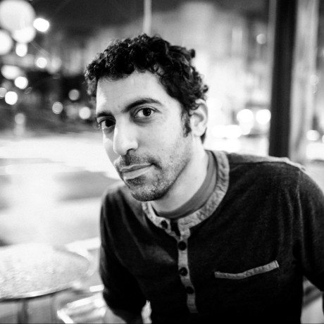
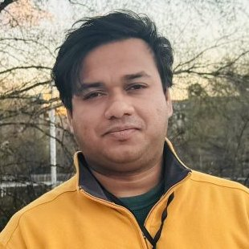

The 3rd Annual Workshop · previously at IUI and ASIS&T
Past Meets Future
Human-AI interaction for digital humanities and cultural heritage. A full-day workshop bringing HCI and AI researchers together with the people who keep the world's memory: the digital humanities and the GLAM sector, galleries, libraries, archives, and museums. Last year we mapped the field’s challenges. This year we explore solutions, together.
two co-located ACM conferences · one venue · one registration covers both
2026full day · workshops day
VirginiaVT Academic Building One · near Washington DC
202611:59 pm Anywhere on Earth
2026early registration announced on the HCOMP & CI sites
About the Workshop
Digital humanities and cultural heritage hold invaluable societal narratives, yet scholars and practitioners face hard problems of data quality, accessibility, and engagement. Human-AI interaction can help at scale, but its potential remains largely untapped. This workshop is about the bridge: researchers and practitioners from HCI, AI, the digital humanities, and GLAM institutions, in one room, exploring shared methods.
Technologists need the expertise of humanities scholars and heritage professionals; humanities scholarship gains new reach when builders and makers are at the table. The work succeeds only with both. So the workshop runs on mentoring and collaboration: we are doing this together, helping each other out.
Organizers
Virginia Tech

Northeastern University Oakland
University of Maryland iSchool
University of Washington iSchool

Carnegie Mellon University
Virginia Tech
CONTACT · PASTMEETSFUTUREHAIWORKSHOP@GMAIL.COM